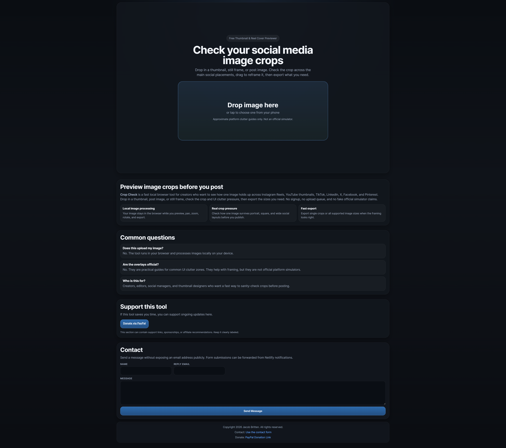
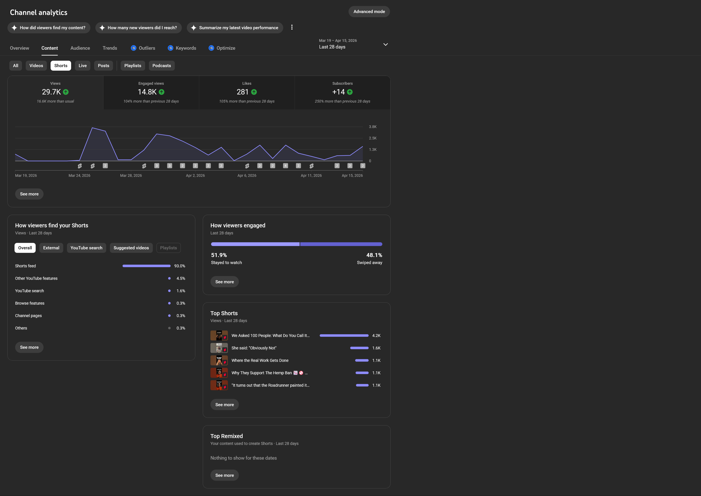
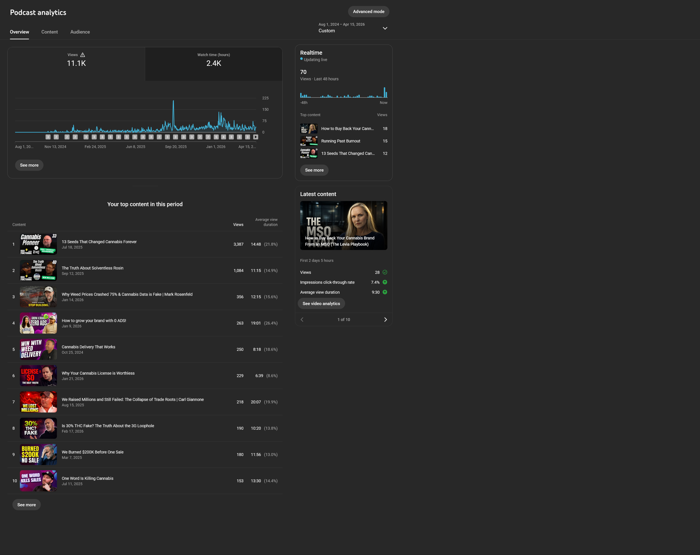
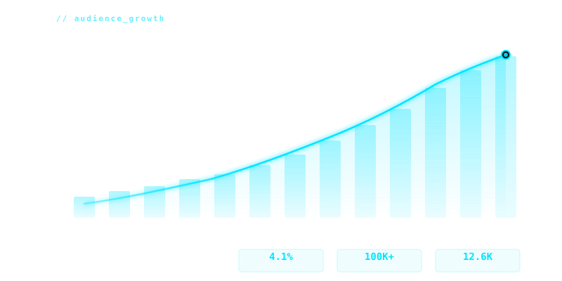
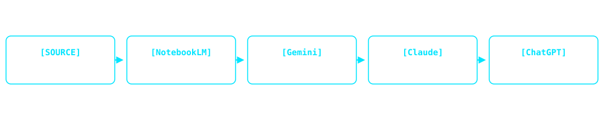

The Blueprint / Engine
Schema-First Remotion Architecture
Strict config contracts, typed scene inputs, and render-safe orchestration before a frame gets exported.
View Repository ↗I engineer Remotion and Node.js pipelines that ingest raw footage, apply programmatic edits, and render platform-ready video assets at scale. With a background in high-volume enterprise real estate media, I build the infrastructure that replaces manual editing.



The Blueprint / Engine
Strict config contracts, typed scene inputs, and render-safe orchestration before a frame gets exported.
View Repository ↗
The Logic
React composition logic, timing systems, and reusable rendering blocks that turn structured data into repeatable output.
View Repository ↗
The Execution / Testing
Testing decisions against viewer behavior, validating what holds attention instead of guessing at pacing.
View Repository ↗The Scale / Metrics
Analytics snapshots tied back to the systems layer: automation that produces measurable reach, throughput, and growth.
View Repository ↗Subscribers Scaled
100K+
Measured outcome: Scaled publishing velocity and audience growth by automating vertical reel generation via a custom Remotion/Node.js pipeline, eliminating 40+ hours of manual post-production bottlenecks per week.
Faster Post-Production
40%
Full Episodes Produced & Shipped
50+
I bypass manual data entry by pushing raw transcripts and documentation through Google NotebookLM and Gemini 1.5 Pro. This extracts structured JSON data and identifies optimal cut points for video.
Chaos kills scale. Every automated pipeline begins as a strict relational database in Notion. I map out the exact data schemas, API routes, and timing logic before writing a single line of code.
I use LLMs as my compiler. By feeding my Notion schemas into Claude and Copilot, I rapidly prototype and deploy React and Remotion components. I act as the orchestrator, debugging the connective tissue and scaling the output.
Broadcast Infrastructure
I set up and run multi-camera live shows on Blackmagic gear. I handle the switching, the signal routing, and the redundancy so nothing drops during a live stream. One show I built from scratch now reaches 11,000+ viewers per episode.
 BROADCAST_RIG.001
BROADCAST_RIG.001

PIPELINE_OUTPUT.002Programmatic Post-Production
I write React and Remotion code that turns raw data into finished videos automatically. No more dragging clips around in After Effects. Feed it a transcript and a JSON config, and it spits out a full social media kit. Cut post-production time by 40%.
AI Automation Orchestration
I run raw audio through a multi-model pipeline — NotebookLM for data ingestion, Gemini for editorial critique, Claude for social copy, ChatGPT for final packaging. The output is a full distribution kit: SEO descriptions, chapter markers, social posts, and Remotion data files. No manual writing.

AI_PIPELINE.003"Jacob has a passion for making projects seamless and creating workflows to make everyone's lives easier. He handles large amounts of projects at once with ease and can easily take on new tasks."
Videographer, Lamacchia Realty
"He works so quickly and adds his own touch to his work — not only do you get it done fast, you also get it done better than you could have imagined."
VP of Marketing, Lamacchia Realty
"Jacob is an accomplished video editor and drone pilot. He recently did a drone shoot for one of my listings and did a fabulous job without any direction. Highly recommended."
Broker/Owner, Residential Real Estate
While leading post-production operations, I measured that over 60% of editing time was lost to repetitive formatting and asset management. To solve this, I architected React and Remotion pipelines that reduced delivery time by automating the rendering layer.
Now I write code (React, Remotion, Node), design AI workflows, and build the automated pipelines that let small teams ship like big ones. I have an MBA and a Master's in Digital Media, but what matters more is that I actually build things.
With eight years in media operations and graduate training in digital systems (MBA/M.Tech), I architect and deploy video automation services used by enterprise real estate firms and podcasts with 100k+ subscribers.
Open to full-time, contract, and project-based roles
Got a content problem that needs a systems solution? Let's talk.